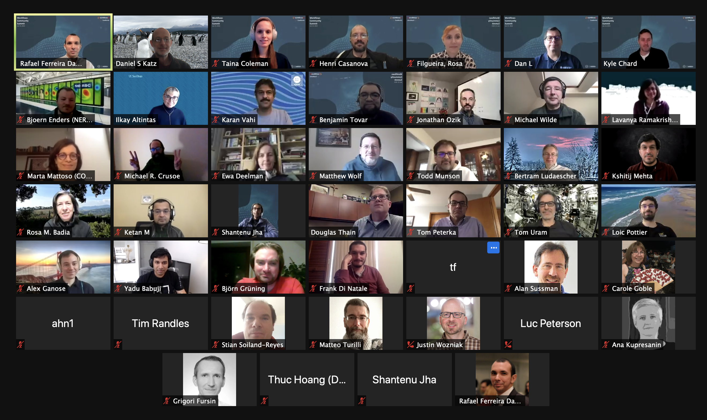

<div class="container support" style="margin-top: 10px;">
  
  <div class="row" style="padding-top: 20px">
    <div class="col-lg-12">
	<h1>Workflows Community Summits</h1>
 
	    <p>In collaboration with <a href="https://workflowsri.org/">the workflowsRI project</a> we are organizing a series of 
		Workflows Community Summits. These events gather workflows stakeholders (researchers, developers, users, facility representatives)
		to identify crucial challenges in the workflow community. 
	</p>
	    
	    <p>Participants span the following facilities, supercomputing centers, and large-scale computing providers: 
	    Argonne Leadership Computing Facility, Oak Ridge Leadership Computing Facility, National Energy Research Scientific Computing Center, 
	    San Diego Supercomputer Center, Pittsburgh Supercomputing Center, Open Science Grid, and others.</p>
	    
      <h3>Third Workflows Community Summit (Nov 8): Tightening the Integration between Computing Facilities and Scientific Workflows
</h3>
	<p>The third Workflows Community Summit will explore workflows challenges and opportunities from the perspective of computing centers
	and facilities. The summit is the third in the series organized by the NSF workflowsRI and DOE ExaWorks projects, and builds on 
	two prior workshops that 1) established a high level vision for workflows research; and 2) explored technical approaches for 
	realizing that vision.</p>

	<p>A summary of the previous workshops is available in two technical reports 
		(<a href='https://doi.org/10.5281/zenodo.4606958'>https://doi.org/10.5281/zenodo.4606958</a>
		and <a href='https://doi.org/10.5281/zenodo.4915801'>https://doi.org/10.5281/zenodo.4915801</a>)
		and an invited paper (<a href='https://arxiv.org/abs/2110.02168'>https://arxiv.org/abs/2110.02168</a>) at 
	the WORKS workshop describing the community roadmap.</p>

	<p>The third workshop will bring together a small group of facilities representatives (one per facility) with the aim to 
		understand how workflows are currently being used at each facility, how facilities would like to interact with 
		workflow developers and users, how workflows fit with facility roadmaps, and what opportunities there are for 
		tighter integration between facilities and workflows.</p>
	    
	    
	    
      <h3>Second Workflows Community Summit (Apr 7): Advancing the State-of-the-art of Scientific Workflows Management Systems Research and Development
</h3>
	<p>Report: <a href='https://doi.org/10.5281/zenodo.4915801'>https://doi.org/10.5281/zenodo.4915801</a></p>

	 <p>The workflowsRI and ExaWorks projects held a very productive Workflows Community Summit in January. 
	The focus was to identify broad challenges for the workflows community and to propose a vision for 
		 community activities to address these challenges.</p>

<p>While the first summit focused on Establishing a high level vision, this second summit will explore technical approaches 
	for realizing (part of) that vision. Consequently, we hope to engage participants who are actively involved in workflow system development.</p>

<p>Based on the outcomes of the first summit, we have identified four technical topics for discussion 
	(some align with a single theme of the first summit, while others are cross-cutting):</p>

	<ul>
		<li>Definition of common workflow patterns and benchmarks (both for determining workflow system functionality and for providing users with tutorial examples);</li>
		<li>Identifying paths toward interoperability of workflow systems; and</li>
		<li>Improving workflow systems' interface with legacy and emerging HPC software and hardware stacks</li>
	</ul>
	    
	    
      <h3>First Workflows Community Summit (Jan 13): Bringing the Scientific Workflows Community Together
</h3>
	<p>Report: <a href='https://doi.org/10.5281/zenodo.4606958'>https://doi.org/10.5281/zenodo.4606958</a></p>
      <p>In collaboration with <a href="https://workflowsri.org/">the workflowsRI project</a> we are organizing the Workflows Community Summit. 
      This unique event will gather a select group of lead researchers from distinct workflow management systems, and will 
      seek to identify crucial challenges in the workflow community. This event will be the first of a series of workflows meetings, 
      and will serve to bring the workflows community together. 
	</p>
	    
      	    
	    
	    
      <p>Videos of the summit presentations are avaialble on <a href='https://www.youtube.com/channel/UCqCnXqWqKe9vF6cqKOj1CYw/videos'>YouTube</a></p>
				    
      <div class="row" style="padding-top: 20px">
	    <div class="col-lg-12">
	      <h3>Agenda</h3>

	      <h4>Wednesday, Jan 13 2021 9:00-12:00 PST (17:00 - 20:00 UTC)</h4> 

	      9:00 am - Welcome and introductions <br />

		    9:05 am - WorkflowsRI project overview (Rafael Ferreira da Silva, USC) <a href='https://www.youtube.com/watch?v=iQpdxML01i0'>Youtube</a><br />
	      9:15 am - ExaWorks project overview (Dan Laney, LLNL)  <a href='https://www.youtube.com/watch?v=RVUDzlok_RQ'>Youtube</a><br />
	      
	      9:25 am - Lightning talks
	      <ul>
		      <li>Theme 1: FAIR computational workflows (Carole Goble, Manchester)  <a href='https://www.youtube.com/watch?v=VN706j9DTcw'>Youtube</a></li>
			<li>Theme 2: Training and education for workflow users (Lavanya Ramakrishnan, LBNL) <a href='https://www.youtube.com/watch?v=i2BiNqNezuw'>Youtube</a></li>
			<li>Theme 3: AI workflows (Luc Peterson, LLNL) <a href='https://www.youtube.com/watch?v=qjCEI4CfI2Y'>Youtube</a></li>
			<li>Theme 4: Exascale challenges and beyond (Bjoern Enders, LBNL) <a href='https://www.youtube.com/watch?v=qyLxRcSiWQ8'>Youtube</a></li>
			<li>Theme 5: APIs, interoperability, reuse, and standards (Douglas Thain, Notre Dame) <a href='https://www.youtube.com/watch?v=xokqqll6HYo'>Youtube</a></li>
			<li>Theme 6: Building a workflows community (Ilkay Altintas, San Diego) <a href='https://www.youtube.com/watch?v=fDEiOjtGqn8'>Youtube</a></li>
	      </ul> 
		    
		9:55 am - Break <br />

	      10:00 am - Breakout Session 1
	      <ul>
		<li>Theme 1: FAIR computational workflows</li>
		<li>Theme 2: Training and education for workflow users </li>
		<li>Theme 3: AI workflows</li>
	      </ul> 
              10:30 am - Reports: Breakout Session 1 <br />
		
	      10:45 am - Break <br />
		    
	      10:55 am - Breakout Session 2
	      <ul>
		<li>Theme 4: Exascale challenges and beyond</li>
		<li>Theme 5: APIs, interoperability, reuse, and standards</li>
		<li>Theme 6: Building a workflows community</li>
	      </ul> 

	      11:25 am - Reports: Breakout Session 2 <br />
		
	      11:40 am - Final remarks and next steps (Kyle Chard, ANL/UChicago) <br />
	      </div>
	    </div>

	    
    </div>
   </div>
	
	
</div>
